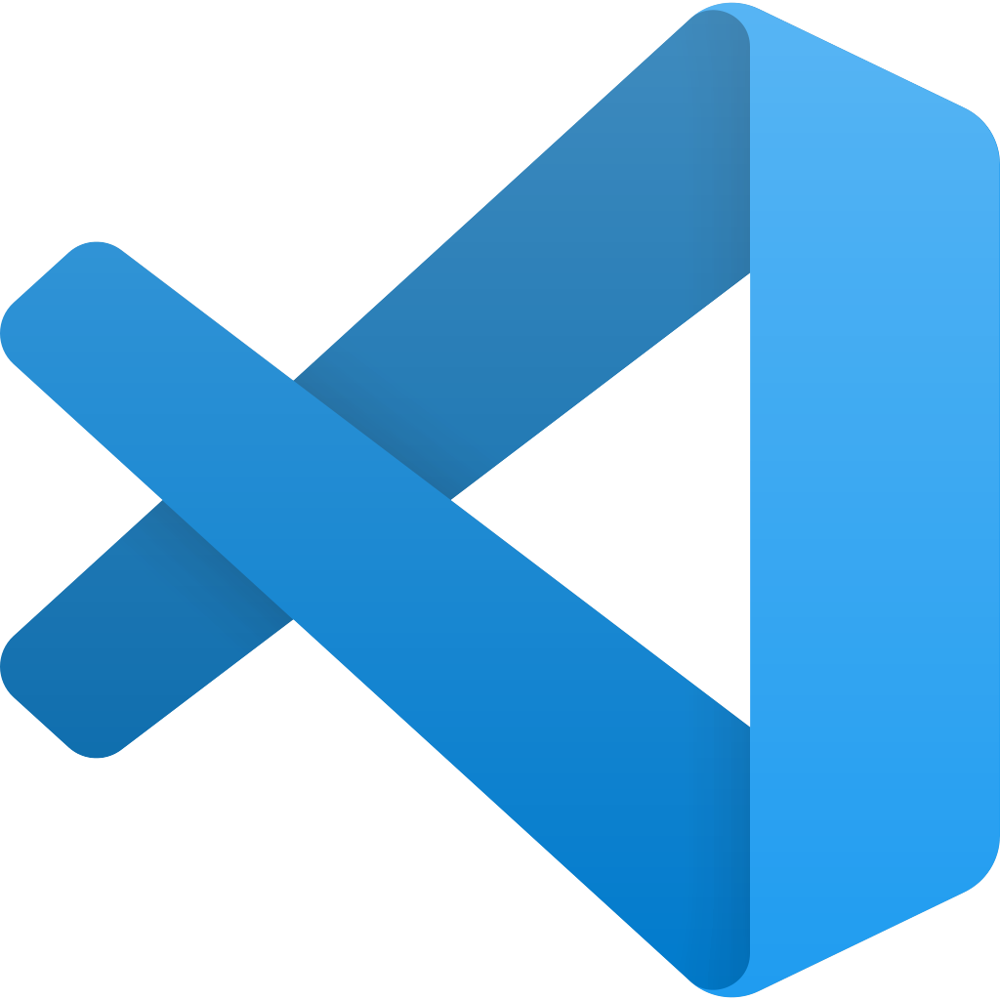
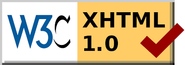

O Visual Studio Code (VS Code) é um editor de código, de código aberto desenvolvido pela Microsoft.
Hoje também aprendemos o Markup Validation Service, que é um serviço gratuito da W3C que ajuda a verificar a validade dos documentos HTML.
Para acessá-lo clique aqui.